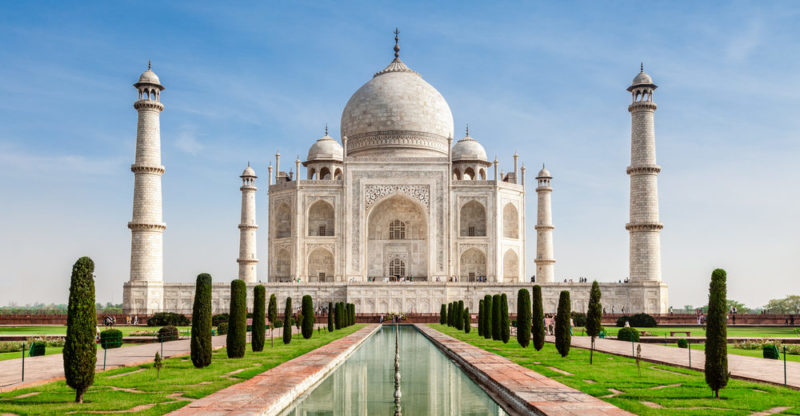

El Taj Mahal
Aunque muchos lo consideran un templo, el Taj Mahal es un mausoleo que esconde una bella y trágica historia de amor entre un emperador y su esposa. Este majestuoso edificio fue construido en siglo XVII y se ubica en las cercanías de la ciudad de Agra, en el estado de Uttar Pradesh, en India y es sin duda una parada obligada para los miles de turistas que visitan este rincón de India. Pero adentrémonos en la historia de amor que envuelve este mágico lugar.
Lloraba un alma enamorada lágrimas, dolor, pena, llanto un corazón entona su triste canto una mano, cansada, tras su ventana cerrada Allí desde su palacio, desde su ventana admira aquella lágrima blanca poesía hecha arte, arte que la pasión arranca para ti, mi amada, mi esposa, mi alma hermana
Muchos dicen que el Taj Mahal es poesía hecho arte y es que la leyenda cuenta que Mumtaz Mahal le pidió al emperador en su lecho de muerte 4 cosas, entre ellas que construyese su tumba y que la visitara cada año.
